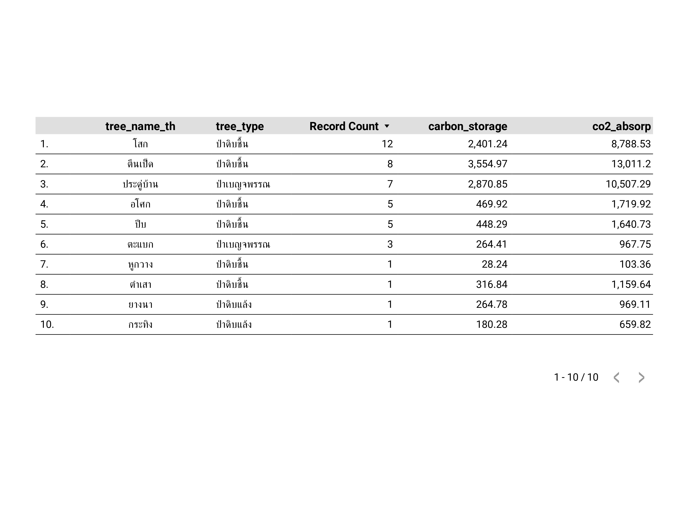

โซนที่ 1: ลานจอดรถหน้าคณะเทคโนโลยีและสิ่งแวดล้อม
โซนที่ 2: บริเวณสนามฟุตบอลและพื้นที่ตลาดนัด มอ.บ้านซ่าน
โซนที่ 3: พื้นที่รอบตึกสนามกีฬาและสนามเทนนิส
โซนที่ 4: ตึกคณะเทคโนโลยีและสิ่งแวดล้อม, ตึกวิทยาลัยการคอมพิวเตอร์, และสำนักงานอธิการบดี
โซนที่ 5: ตึกคณะวิเทศศึกษา และห้องสมุด
โซนที่ 6: ตึกคณะการบริการและการท่องเที่ยว และอาคารเรียนรวม

โซนที่ 7: บริเวณพื้นที่สำหรับสูบบุหรี่

โซนที่ 8: ลานจอดรถบริเวณโรงอาหาร